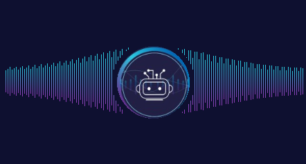

03 Research & Engineering
Engineering research
Applied ML and systems projects — open a project below.
← Back to portfolio
A Multilingual Emotion Intelligence Framework
ASR, OpenSMILE and BERT-LSTM for cross-lingual emotion analysis in English and Bengali speech and text.
- ASR
- NLP
- Deep Learning